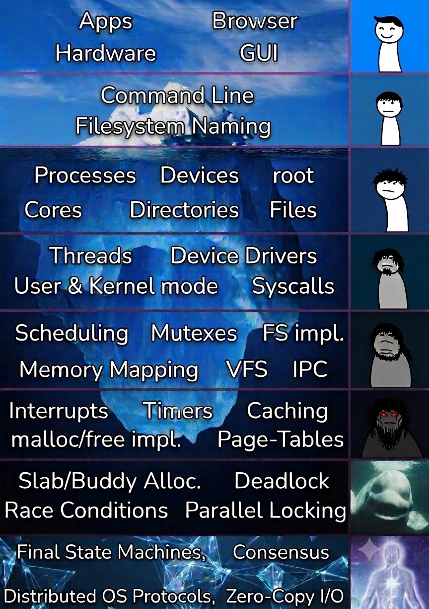

The George Washington University
| CSCI 3411 | Fall 2026 |
| TR 12:45PM - 02:00PM ET | Jason Monroe Hall (MON) 111 |
This course covers the fundamental concepts of operating systems, focusing on resource management and abstraction.
In completing this course, students will,

We will cover topics related to:
Credit: a lot of the material is this course is designed by: Prof. Gabe Parmer.
Undergraduate students in CS mostly (perhaps ECE) who have taken the following prerequisites:
Note: Though we do not assume that you have kernel experience, if you aren’t somewhat comfortable with C, you will have a very difficult time. Thus, a familiarity with C or a willingness to quickly learn and practice it is required. If you are not comfortable with C, at least go through Essential C and the exercises in the Course Material Section.
Table of Contents
make print)make and make qemucdecl command or check the cdecl webpage| Chapter | Topic | Links | Text Chapters | ||
|---|---|---|---|---|---|
| 1 | Introduction | slides | |||
| 2 | Course Administrivia | slides | |||
| 3 | Why Operating Systems | slides | |||
| 4 | System Architecture and Structure | slides | video | 1, 2 | |
| HW # | HW Title | Deadlines |
|---|---|---|
| 0 | HW 0 | Academic Integrity | due SEPT 01 [6:00 PM] | |
| 1 | HW 1 | Simple C Data Structures | due SEPT 11 [6:00 PM] |
| Lab # | Lab Topic |
|---|---|
| 0 | Lab 0 | Class Infrastructure |
| 1 | Lab 1 | C, unix, make and more! |
[Slides last built at 2026-09-08 20:37:18.]
| Position | Name | |
|---|---|---|
| Instructor | Prof. Sibin Mohan | sibin.mohan@gwu.edu |
| Grad TA | Yuan Gao | ygao1@gwmail.gwu.edu |
| Grad TA | Faris Jiwad | fjiwad@gwmail.gwu.edu |
| UTA | Anand Bhat | anand.bhat@gwmail.gwu.edu |
| LA | Calum Wilson | calum.wilson@gwmail.gwu.edu |
| Detail | Information |
|---|---|
| Time: | TUE/THUR 12:45 -- 2:00 PM ET |
| Location: | Jason Monroe Hall (MON) 111 |
| Lab Sections: | TBA |
| Lab Sections Location: | SEH 4040 |
| Prof. Mohan office Hours: | TBA * |
| TA Office Hours: | Look at the class calendar |
| Location: | Outside SEH 4000 |
| Contact: | please message on Discord |
[* Please message ahead of time and set up alternate slot in case of conflicts for office hours.]
Note: Make sure that you're properly preparing and presenting yourself at office hours!
We will use Discord for all course related communications.
| Component | % Grade |
|---|---|
| Homeworks | 60 % |
| Tests | 30 % |
| In-Class Participation | 10 % |
Important Notes about Grading:
Note: ONLY talk about your final grade with Prof. Sibin Mohan. None of the other instructional staff have access to grades or the ability to modify them.
When you are required to test your code, please note that our test cases will test every edge case in the implementation. If you do not write code to test the edge-cases of the specifications, then you will lose credit. This is the largest reason why students get lower grades than they believe they deserve. If you believe that an error was made in grading, then please explicitly address why you believe your test cases are sufficient to test all cases. See the discussion about testing and debugging below.
Any homework graded by demo (i.e. the project) must adhere to style guidelines, and you must curate your code. It must be simple, readable, and clean. See this post For some thoughts on how to make your code more readable, see the Composite Style Guide.
I encourage you to ask questions and ask often. Participate in discussions as well. Take notes since that helps with the learning.
Participation grade includes,
In short, participation will be graded not only on attendance, but also on interactivity and involvement during class and on discord.
I’ll call on random students to answer questions. Instead of bureaucratically tracking participation, I’ll ask questions in lecture to a random student! This is stressful, and I apologize for that. However, I want to normalize that it is OK if you don’t know the answer. Given this, any student asked a question can either
In the last case, I’ll end up calling on you again sooner. It is absolutely fine, to not know an answer, or to give it a wild guess. Most of life we’re wrong about most things, but we aim, in the end to get a few things right.
The following modifies apply to your grade on all homeworks (but not the project).
xv6 warning flags, or -Wall -Wextra -Werror if not in xv6) as we will make compilations fail (with -Werror) if there are warnings. Forgetting to git add files is not an excuse. “A small change makes it compile” is not an excuse. You should always do a fresh git clone of your submitted repo, to make sure that it compiles and your tests work. Make sure it works in the VM using the version of the compiler we use (i.e. Ubuntu). If you don’t test in this specific environment, your code will likely fail compilation.Your grade can be minimum 0%, but your maximum grade can be higher than 100% (if there is extra credit). There is one exception:
I cannot emphasize this point enough: The only way people have failed this class is by not trying or by not doing their own work.
Objectives: in completing this class, students will,
Structure: this class is broken into two main activities: lectures and lab.
Each semester, you’re expected to spend at least:
All of your homeworks for this class will be submitted via github. The last commit that you make to the repo will be graded, and the lateness penalties of that commit (see “Late Policy” below) will apply. Please do not make pushes to your repo after the version you want graded. Please also note that it is necessary to issue a git push up to the github repo for submission. Local commits to your own repo do not update github, thus cannot be counted as submission.
All assignments are submitted on github by doing a push of your commits before the deadline. There are a huge number of errors that one can make, so I highly suggest that you do the following procedure. When you submit an assignment, I suggest that you follow this procedure:
git status to make sure that you have git added all of the intended files.git diff and git diff --stat to make sure that you’re committing what you think you are. Of note, check to see if you’re committing any printfs that are intended for debugging, not for program output.git commit and git push to upload your code to github.git clone ... to get a fresh version of the repository, build it, and run your tests. Students who omit this step get bad grades for very avoidable reasons. Always make sure that your submission matches what you think you’re submitting.We want to be able to use your git commit logs and diffs, along with partner feedback to assess work done in groups. We don’t expect the work to be exactly equal between team members, but we do expect each group member to pull their own weight. Thus, we expect you to follow some simple rules when using git:
DOES NOT COMPILE in the commit message body. Many commits made when pair programming will use this.Your commit logs will not feed directly into your grade. However, they will play a role in how we determine groups and they might lead to meetings to discuss your contributions.
How you comport yourself online in the class just adhere to our online social contract. For the class we’ll use the following technologies for the specified purposes:
class-information document. They are submitted via pushes to github. See the details on submission and on how to use github below.class-information document. Office hours, informal discussion, and other online help will use various rooms associated with the OS Discord. The discussion on Discord is, by default, synchronous and transient. Synchronous means that you might get an immediate response (if anyone is online), and can have a discussion. Transient means that the conversation will be lost to the brutality of the scroll-bar. This means that no-one in the class (including the instructional staff) are expected to see Discord discussion, in general.
Note: we cannot guarantee super-fast responses. In general, we will guarantee that we will reply in a batch, once per day. Additionally, we reserve the right to not answer homework questions the day before it is due – procrastination is not encouraged.
questions-and-answers document and the class-information document which includes all links for the class.Please see the discussion about Academic Integrity below. A rule of thumb is that you should not post code on any discussion medium with reach beyond your group. We do not use blackboard.
Student Responsibilities: Students must,
We will work with you to come up with a plan to be successful in the class.
We also need your feedback for parts of the class that aren't working for you. We do our best in running the class, but certainly make mistakes, or overlook different aspects. Class evaluations are of limited use since they only are given at the end of the class. Please provide feedback using the Google form.
You should depend on the instructional staff (including Sibin) for the class to:
These can be remembered as "we're here to make it clear what you should do, what you should know, and what to do if you don't feel like you know what you're supposed to do or know".
If at any point, you have concerns about any of these, of if we're dropping the ball on any of them, please let us know and we'll do better.
There are trade-offs made in the class (for example, some homeworks may not be formally specified as I don't want them to be 50 pages each), but you always encouraged to ask questions and clarify.
Further, it is our intent that students from all diverse backgrounds and perspectives be well-served by this course, that students’ learning needs be addressed both in and out of class, and that the diversity that the students bring to this class be viewed as a resource, strength and benefit.
It is our intent to present materials and activities that are respectful of: gender identity, sexuality, disability, age, socioeconomic status, ethnicity, race, nationality, religion, and culture.
Your suggestions are encouraged and appreciated.
Please let us know ways to improve the effectiveness of the course for you personally, or for other students or student groups.
The only acceptable excuses for late submissions are medical, family, and related issues. For assignments that are assigned for a large span of time (e.g. two weeks), a single two day disturbance (for example) should not inhibit your ability to complete the assignment. Generally unacceptable excuses include:
git add necessary files, or forgetting to git push (proper git
usage is a requirement for the class), andYou get 0 credit for late work that is not explicitly excused by Gabe. However, once the grades are released, you can resubmit your code within seven days, rounded up to the closest midnight. For example, if the grades are released at 2:30pm on the 8th, resubmissions are due at midnight on the 15th (i.e. 8 + 7 = 15). You will get 0 additional credit for re-submissions after this date.
We will grade the last commit before the resubmission deadline, and you will receive 50% of the credit on top of the original grade, rounded up to the nearest percent. For example, if you got a 43% on the initial deadline, and resubmit and get a 68%, your final grade (g) will be g = 43 + ⌈(68 - 43) / 2⌉ = 56.
We calculate homework i’s grade as gi, and the extra credit as ei:
where oi is the original submission’s grade (and includes the negative modifiers above), ri is the regrade (which includes any applicable negative modifiers, and always includes the “cheating” penalty), eearly is any early submission points on the normal deadline, eri is the resubmission’s extra credit, and eoi is the original submissions grade.
where oi is the original submission’s grade (and includes the negative modifiers above), ri is the regrade (which includes any applicable negative modifiers, and always includes the “cheating” penalty), eearly is any early submission points on the normal deadline, eri is the resubmission’s extra credit, and eoi is the original submissions grade.
Do not come to rely on the resubmission process. Homeworks are due every week or every other week, so it is very harmful to get behind on them, or to add more work to your schedule. Thus, our late policy is quite strict to discourage procrastination.
Please note that in terms of academic honesty, you cannot share your code with your peers even after it is due.
Individual Work with Collaboration. You are encouraged to work together. You may discuss the homeworks with other people to understand the problem and reach a solution. However, each student/group must write down the solution independently, without referring to written notes or code from others. You’ll each have your own github classroom repo, and will submit your own work. Hence, you must understand the solution well enough to discuss it yourself. In addition, each student/group must explicitly mention the names of the people with whom they collaborated.
Buddy System. However, you’re allowed to pair up with another student in the class --- your buddy. You can collaborate as you see fit. Unlike the normal academic honesty rules of the class, you’re allowed to share code. For any commits that share code with your buddy, you must acknowledge as such in the corresponding commits.
If your buddy stops contributing, procrastinates or otherwise indicates (through action) that they don’t want to reasonably collaborate, you are responsible for your own code and submission. You must not wait for your buddy, and make progress on your own to meet the deadline. Further, no student has to collaborate with their buddy, but you do have to be clear with your communication –-- you cannot “go dark” and have to use clear communication about your intentions for the collaboration.
If I suspect cheating++, I might have the student(s) come and answer questions in my office. If my suspicions are confirmed, I will consider a range of possibilities (depending on the seriousness of the offence) that includes any/all of the following:
(++ we will use a number of methods to detect cheating that includes, automated software, eyeballing the code, talking to the student, etc.)
The purpose of problem sets in this class is to help you think about the material, not just give us the right answers. You are encouraged to use online resources for learning more about the material covered in class; however, you should not look for or use found solutions to questions in the problem sets. Specifically, you must not look at any code that has been created to solve the assignment, including solutions found on the internet to questions in the problem sets, code created by a student in a previous class or code created by a current classmate. (Though frankly, I seriously doubt you'll find anything, I regularly change the assignments).
Working in groups can be challenging. The core strategies to avoid conflict and acrimony all must focus on planning and clear communication. You must follow this guidance in your group work. This includes:
It must be cognizant of
Read the above guidance carefully.
The use of ChatGPT, GitHub CoPilot and any/all other code generation tools (that currently exist or will be developed
in the future) is expressly forbidden!
If any student is found using such tools then it will be considered a violation of academic integrity and reported appropriately.
Just as you can do a google search for code online, it is trivial for us to do the same. We have caught numerous people cheating in the past in this way. If you feel pressured about an assignment, please come see me instead of cheating.
You are not allowed to collaborate on the homeworks and the lab assignments (except the buddy system mentioned above). The group projects require collaboration within each group, but no collaboration between teams is permitted. Please refer to the academic integrity policy linked from the course web page. This policy will be strictly enforced. If you’re having significant trouble with an assignment, please contact me. If you have not signed the academic integrity statement for homework 0, you will not receive a passing grade for the class.
Summary: I want to be very clear:
In the past, the only way that people have failed this class is to either not try (not do homeworks), or to not do their own work (or share their work with others). There is almost no reason to do this. Come to me, and we can discuss where you’re at, and what you have to do to make it through this difficult class!
Note that you’re very much allowed to do any of the following:
xv6 or C design and/or details with peers.Justification: Not doing your own work hurts your ability to compete for CS jobs. Everyone came to college to learn. You learn by doing work to reinforce class ideas. Understanding ideas from class is nowhere near as effective at learning as applying those ideas in an implementation. Thus, you need to do your own implementation to be a competitive CS student in the real-world!
Not doing your own work hurts your peers. Courses that are graded on a curve have the side-effect that if someone inflates their grade not by hard work, but by not doing your own work, your good grade (should the Professor not catch you) will hurt the grade of all of your colleagues that put the work in.
Not doing your own work also hurts the quality of the OS class in the long term, thus hurts all future generations of GW CS undergrads. If you don’t do your own work, especially using previous year student’s work, to the point where the Professor believes that they must develop new assignments every year, then those assignments will not be as strong. They will not meet learning objectives in a course like this. All future CS students will be less prepared for competing for the best jobs.
Academic Integrity is an integral part of the educational process, and GW takes these matters very seriously. Violations of academic integrity occur when students fail to cite research sources properly, engage in unauthorized collaboration, falsify data, and in other ways outlined in the Code of Academic Integrity. Students accused of academic integrity violations should contact the Office of Academic Integrity to learn more about their rights and options in the process. Outcomes can range from failure of assignment to expulsion from the University, including a transcript notation. The Office of Academic Integrity maintains a permanent record of the violation.
Familiarize yourself with the standards set forth in the GWU Code of Student Conduct and specifically the University’s “Guide of Academic Integrity in Online Learning Environments". If there is any question about whether an act constitutes academic misconduct, it is your responsibility to seek clarification and approval from the instructor prior to acting. When in doubt, ask, or don't do it.
Contact information:
If you miss a class, for whatever reason, you are still responsible for that class' material. Go through the lectures, consult the scribe notes, come to office hours (in that order), and talk to your fellow students, to learn the material.
You have one week after a grade is released to ask us questions about it and seek a correction. After the week has passed, the grade is finalized. When releasing a grade, we may also post comments where appropriate, explaining where you lost points, made mistakes, etc.
In case you are seeking a correction to the grade, you need a specific reason. I cannot accommodate general requests that are a variation on "I think my grade was too low". Why do you think that? Based on our discussion, we might increase the grade, decrease it, or leave it as is.
Of course, you can stop by anytime during the term to ask questions about any part of the material. The one-week deadline applies to grade-specific questions.
Students are encouraged to use electronic course materials, including recorded class sessions, for private personal use in connection with their academic program of study. Electronic course materials and recorded class sessions must not be shared and must not be used for non-course related purposes unless express permission has been granted by the instructor. Students who impermissibly share any electronic course materials are subject to discipline under the Student Code of Conduct. Please contact the instructor if you have questions regarding what constitutes permissible or impermissible use of electronic course materials and/or recorded class sessions. Please contact Disability Support Services if you have questions or need assistance in accessing electronic course materials.
GW’s Writing Center cultivates confident writers in the University community by facilitating collaborative, critical, and inclusive conversations at all stages of the writing process. Working alongside peer mentors, writers develop strategies to write independently in academic and public settings. Appointments can be booked online at: gwu.mywconline.
Academic Commons provides tutoring and other academic support resources to students in many courses. Students can schedule virtual one-on-one appointments or attend virtual drop-in sessions. Students may schedule an appointment, review the tutoring schedule, access other academic support resources, or obtain assistance at academiccommons.gwu.ed.
The university's COVID-19 Safety and Success website serves as the primary communication channel for the GWU regarding COVID-19 logistics and classroom guidelines.
Accommodations for students with disabilities are determined and approved by Disability Support Services(DSS). If you, as a student, feel that you need accommodations but have not obtained approval please contact DSS immediately at 202-994-8250 or at https://disabilitysupport.gwu.edu. DSS notifies students and faculty members of approved academic accommodations and coordinates implementation of those accommodations. While not required, students and faculty members are encouraged to discuss details of the implementation of individual accommodations.
We expect all students to act in an respectful and ethical way, both with respect to the treatment of their peers in the classroom during discussion but also in the design and execution of their course projects. Actions should meet the expectations of ethical research and follow the norms and proper behavior of the George Washington University community. We strive for an inclusive classroom, which includes but is not limited to anti-racism, anti-sexism, accessibility, LGBTQ+ inclusivity. If you feel like you are unable to use inclusive language and behave in a non-discriminatory way, please drop the class.
In accordance with University policy, students should notify faculty during the first week of the semester of their intention to be absent from class on their day(s) of religious observance. For details and policy, see “Religious Holidays”.
University students encounter setbacks from time to time. If you encounter difficulties and need assistance, it's important to reach out. Consider discussing the situation with an instructor or academic advisor. Learn about resources that assist with wellness and academic success at Health and Wellness Center.
If you or someone you know are in immediate crisis, please contact one of the following resources immediately: